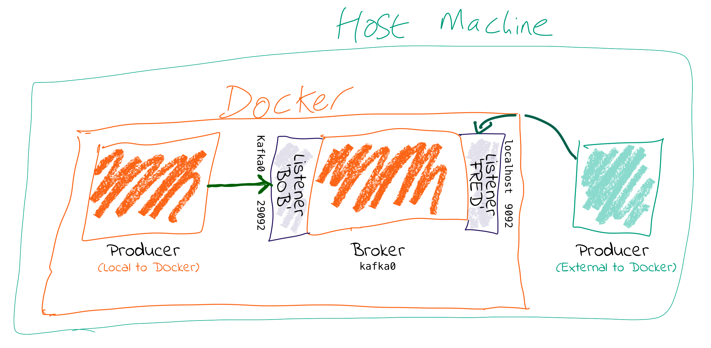

Listener
This question comes up on StackOverflow and such places a lot, so here’s something to try and help.
tl;dr : You need to set advertised.listeners (or KAFKA_ADVERTISED_LISTENERS if you’re using Docker images) to the external address (host/IP) so that clients can correctly connect to it. Otherwise they’ll try to connect to the internal host address–and if that’s not reachable then problems ensue.
Put another way, courtesy of Spencer Ruport:
LISTENERSare what interfaces Kafka binds to.ADVERTISED_LISTENERSare how clients can connect.

In this post I’ll talk about why this is necessary, and then show how to do it, based on a couple of scenarios - Docker, and AWS.
Is anyone listening?
Kafka is a distributed system. Data is read from & written to the Leader for a given partition, which could be on any of the brokers in a cluster. When a client (producer/consumer) starts, it will request metadata about which broker is the leader for a partition—and it can do this from any broker. The metadata returned will include the endpoints available for the Leader broker for that partition, and the client will then use those endpoints to connect to the broker to read/write data as required.
It’s these endpoints that cause people trouble. On a single machine, running ‘bare metal’ (no VMs, no Docker), everything might be the hostname (or just localhost) and it’s easy. But once you move into more complex networking setups, and multiple nodes, you have to pay more attention to it.
Let’s assume you have more than one network. This could be things like:
- Docker internal network(s) plus host machine
- Brokers in the cloud (eg. AWS EC2), and on-premises machines locally (or even in another cloud)
You need to tell Kafka how the brokers can reach each other, but also make sure that external clients (producers/consumers) can reach the broker they need to.
The key thing is that when you run a client, the broker you pass to it is *just where it’s going to go and get the metadata about brokers in the cluster from*. The actual host & IP that it will connect to for reading/writing data is based on *the data that the broker passes back in that initial connection*—even if it’s just a single node and the broker returned is the same as the one connected to.
For configuring this correctly, you need to understand that Kafka brokers can have multiple listeners. A listener is a combination of
- Host/IP
- Port
- Protocol
Let’s check out some config. Often the protocol is used for the listener name too, but here let’s make it nice and clear by using abstract names for the listeners:
KAFKA_LISTENERS: LISTENER_BOB://kafka0:29092,LISTENER_FRED://localhost:9092
KAFKA_ADVERTISED_LISTENERS: LISTENER_BOB://kafka0:29092,LISTENER_FRED://localhost:9092
KAFKA_LISTENER_SECURITY_PROTOCOL_MAP: LISTENER_BOB:PLAINTEXT,LISTENER_FRED:PLAINTEXT
KAFKA_INTER_BROKER_LISTENER_NAME: LISTENER_BOB
I’m using the Docker config names—the equivalents if you’re configuring server.properties directly (e.g. on AWS etc) are shown indented in the following list
KAFKA_LISTENERS
is a comma-separated list of listeners, and the host/ip and port to which Kafka binds to on which to listen. For more complex networking this might be an IP address associated with a given network interface on a machine. The default is 0.0.0.0, which means listening on all interfaces.
-
listeners -
KAFKA_ADVERTISED_LISTENERS
is a comma-separated list of listeners with their the host/ip and port. This is the metadata that’s passed back to clients.
-
advertised.listeners -
KAFKA_LISTENER_SECURITY_PROTOCOL_MAP
defines key/value pairs for the security protocol to use, per listener name.
listener.security.protocol.map
Note: The script that configures the Docker image uses the listener name to determine whether to include the SSL configuration items. If you want to use SSL, you need to include SSL in your listener name (e.g. LISTENER_BOB_SSL). Thanks to Russ Sayers for pointing this out.
Kafka brokers communicate between themselves, usually on the internal network (e.g. Docker network, AWS VPC, etc). To define which listener to use, specify KAFKA_INTER_BROKER_LISTENER_NAME (inter.broker.listener.name). The host/IP used must be accessible from the broker machine to others.
Kafka clients may well not be local to the broker’s network, and this is where the additional listeners come in.
Each listener will, when connected to, report back the address on which it can be reached. The address on which you reach a broker depends on the network used. If you’re connecting to the broker from an internal network it’s going to be a different host/IP than when connecting externally.
When connecting to a broker, the listener that will be returned to the client will be the listener to which you connected (based on the port).
kafkacat is a useful tool for exploring this. Using -L you can see the metadata for the listener to which you connected. Based on the same listener config as above (LISTENER_BOB / LISTENER_FRED), check out the respective entries for broker 0 at: -
- Connecting on port 9092 (which we map as
LISTENER_FRED), the broker’s address is given back aslocalhost
$ kafkacat -b kafka0:9092 \
-L
Metadata for all topics (from broker -1: kafka0:9092/bootstrap):
1 brokers:
broker 0 at localhost:9092
- Connecting on port 29092 (which we map as
LISTENER_BOB), the broker’s address is given back askafka0:
$ kafkacat -b kafka0:29092 \
-L
Metadata for all topics (from broker 0: kafka0:29092/0):
1 brokers:
broker 0 at kafka0:29092
You can also use tcpdump to examine the traffic from a client connecting to the broker, and spot the hostname that’s returned from the broker.
Why can I connect to the broker, but the client still fails?
tl;dr Even if you can make the initial connection to the broker, the address returned in the metadata may still be for a hostname that is not accessible from your client.
Let’s walk this through step by step.
- We’ve got a broker on AWS. We want to send a message to it from our laptop. We know the external hostname for the EC2 instance (
ec2-54-191-84-122.us-west-2.compute.amazonaws.com). We’ve created the necessary entry in the security group to open the broker’s port to our inbound traffic. We do smart things like checking that our local machine can connect to the port on the AWS instance:
$ nc -vz ec2-54-191-84-122.us-west-2.compute.amazonaws.com 9092
found 0 associations
found 1 connections:
1: flags=82<CONNECTED,PREFERRED>
outif utun5
src 172.27.230.23 port 53352
dst 54.191.84.122 port 9092
rank info not available
TCP aux info available
Connection to ec2-54-191-84-122.us-west-2.compute.amazonaws.com port 9092 [tcp/XmlIpcRegSvc] succeeded!
Things are looking good! We run:
echo "test"|kafka-console-producer --broker-list ec2-54-191-84-122.us-west-2.compute.amazonaws.com:9092 --topic test
Now…what happens next?
-
Our laptop resolves
ec2-54-191-84-122.us-west-2.compute.amazonaws.comsuccessfully (to the IP address 54.191.84.122), and connects to the AWS machine on port 9092 -
The broker receives the inbound connection on port 9092. It returns the metadata to the client, with the hostname
ip-172-31-18-160.us-west-2.compute.internalbecause this is the host name of the broker and the default value forlisteners. -
The client the tries to send data to the broker using the metadata it was given. Since
ip-172-31-18-160.us-west-2.compute.internalis not resolvable from the internet, it fails.
$ echo "test"|kafka-console-producer --broker-list ec2-54-191-84-122.us-west-2.compute.amazonaws.com:9092 --topic test
>>[2018-07-30 15:08:41,932] ERROR Error when sending message to topic test with key: null, value: 4 bytes with error: (org.apache.kafka.clients.producer.internals.ErrorLoggingCallback)
org.apache.kafka.common.errors.TimeoutException: Expiring 1 record(s) for test-0: 1547 ms has passed since batch creation plus linger time
- Puzzled, we try the same thing from the broker machine itself:
$ echo "foo"|kafka-console-producer --broker-list ec2-54-191-84-122.us-west-2.compute.amazonaws.com:9092 --topic test
>>
$ kafka-console-consumer --bootstrap-server ec2-54-191-84-122.us-west-2.compute.amazonaws.com:9092 --topic test --from-beginning
foo
It works fine! That’s because we are connecting to port 9092, which is configured as the internal listener, and thus reports back its hostname as ip-172-31-18-160.us-west-2.compute.internal which is resolvable from the broker machine (since it’s its own hostname!)
- We can make life even easier by using
kafkacat. Using the-Lflag we can see the metadata returned by the broker:
$ kafkacat -b ec2-54-191-84-122.us-west-2.compute.amazonaws.com:9092 -L
Metadata for all topics (from broker -1: ec2-54-191-84-122.us-west-2.compute.amazonaws.com:9092/bootstrap):
1 brokers:
broker 0 at ip-172-31-18-160.us-west-2.compute.internal:9092
Clear as day, the internal hostname is returned. This also makes this seemingly-confusing error make a lot more sense—connecting to one hostname, getting a lookup error on another:
$ kafkacat -b ec2-54-191-84-122.us-west-2.compute.amazonaws.com:9092 -C -t test
% ERROR: Local: Host resolution failure: ip-172-31-18-160.us-west-2.compute.internal:9092/0: Failed to resolve 'ip-172-31-18-160.us-west-2.compute.internal:9092': nodename nor servname provided, or not known
Here we’re using kafkacat in consumer mode (-C) from our local machine to try and read from the topic. As before, because we’re getting the internal listener hostname back from the broker in the metadata, the client cannot resolve that hostname to read/write from.
I saw a StackOverflow answer suggesting to just update my hosts file…isn’t that easier?
This is nothing more than a hack to workaround a mis-configuration, instead of actually fixing it.
If the broker is reporting back a hostname to which the client cannot connect, then hardcoding the hostname/IP combo into the local /etc/hosts may seem a nice fix. But this is a very brittle and manual solution. What happens when the IP changes, when you move hosts and forget to take the little hack with you, when other people want to do the same?
Much better is to understand and actually fix the advertised.listeners setting for your network.
HOWTO: Connecting to Kafka on Docker
Run within Docker, you will need to configure two listeners for Kafka:
- Communication within the Docker network. This could be inter-broker communication (i.e. between brokers), and between other components running in Docker such as Kafka Connect, or third-party clients or producers.
For these comms, we need to use the hostname of the Docker container(s). Each Docker container on the same Docker network will use the hostname of the Kafka broker container to reach it
- Non-Docker network traffic. This could be clients running local on the Docker host machine, for example. The assumption is that they will connect on
localhost, to a port exposed from the Docker container.
Here’s the docker-compose snippet:
[…]
kafka0:
image: "confluentinc/cp-enterprise-kafka:5.2.1"
ports:
- '9092:9092'
- '29094:29094'
depends_on:
- zookeeper
environment:
[…]
# For more details see See https://rmoff.net/2018/08/02/kafka-listeners-explained/
KAFKA_LISTENERS: LISTENER_BOB://kafka0:29092,LISTENER_FRED://kafka0:9092,LISTENER_ALICE://kafka0:29094
KAFKA_ADVERTISED_LISTENERS: LISTENER_BOB://kafka0:29092,LISTENER_FRED://localhost:9092,LISTENER_ALICE://never-gonna-give-you-up:29094
KAFKA_LISTENER_SECURITY_PROTOCOL_MAP: LISTENER_BOB:PLAINTEXT,LISTENER_FRED:PLAINTEXT,LISTENER_ALICE:PLAINTEXT
KAFKA_INTER_BROKER_LISTENER_NAME: LISTENER_BOB
[…]
- Clients within the Docker network connect using listener “BOB”, with port 29092 and hostname
kafka0. In doing so, they get back the hostnamekafka0to which to connect. Each docker container will resolvekafka0using Docker’s internal network, and be able to reach the broker. - Clients external to the Docker network connect using listener “FRED”, with port 9092 and hostname
localhost. Port 9092 is exposed by the Docker container and so available to connect to. When clients connect, they are given the hostnamelocalhostfor the broker’s metadata, and so connect to this when reading/writing data. - The above configuration would not handle the scenario in which a client external to Docker and external to the host machine wants to connect. This is because neither
kafka0(the internal Docker hostname) orlocalhost(the loopback address for the Docker host machine) would be resolvable.
HOWTO: Connecting to Kafka on AWS/IaaS
I’m naming AWS because it’s what the majority of people use, but this applies to any IaaS/Cloud solution.
Exactly the same concepts apply here as with Docker. The main difference is that whilst with Docker the external connections may well be just on localhost (as above), with Cloud-hosted Kafka (such as on AWS) the external connection will be from a machine not local to to the broker and which will need to be able to connect to the broker.
A further complication is that whilst Docker networks are heavily segregated from the host’s, on IaaS often the external hostname is resolvable internally, making it hit and miss when you may actually encounter these problems.
There are two approaches, depending on whether the external address through which you’re going to connect to the broker is also resolvable locally to all of the brokers on the network (e.g VPC).
Option 1 - external address IS resolvable locally
You can get by with one listener here. The existing listener, called PLAINTEXT, just needs overriding to set the advertised hostname (i.e. the one that is passed to inbound clients)
Now connections both internally and externally will use ec2-54-191-84-122.us-west-2.compute.amazonaws.com for connecting. Because ec2-54-191-84-122.us-west-2.compute.amazonaws.com can be resolved both locally and externally, things work fine.
Option 2 - external address is NOT resolvable locally
You will need to configure two listeners for Kafka:
- Communication within the AWS network (VPC). This could be inter-broker communication (i.e. between brokers), and between other components running in the VPC such as Kafka Connect, or third-party clients or producers.
For these comms, we need to use the internal IP of the EC2 machine (or hostname, if DNS is configured).
- External AWS traffic. This could be testing connectivity from a laptop, or simply from machines not hosted in Amazon. In both cases, the external IP of the instance needs to be used (or hostname, if DNS is configured).
Here’s an example configuration:
listeners=INTERNAL://0.0.0.0:19092,EXTERNAL://0.0.0.0:9092
listener.security.protocol.map=INTERNAL:PLAINTEXT,EXTERNAL:PLAINTEXT
advertised.listeners=INTERNAL://ip-172-31-18-160.us-west-2.compute.internal:19092,EXTERNAL://ec2-54-191-84-122.us-west-2.compute.amazonaws.com:9092
inter.broker.listener.name=INTERNAL
Exploring listeners with Docker
Take a look at https://github.com/rmoff/kafka-listeners. This includes a docker-compose to bring up a Zookeeper instance along with Kafka broker configured with several listeners.
- Listener
BOB(port 29092) for internal traffic on the Docker network
$ docker-compose exec kafkacat \
kafkacat -b kafka0:29092 \
-L
Metadata for all topics (from broker 0: kafka0:29092/0):
1 brokers:
broker 0 at kafka0:29092
- Listener
FRED(port 9092) for traffic from the Docker-host machine (localhost)
$ docker-compose exec kafkacat \
kafkacat -b kafka0:9092 \
-L
Metadata for all topics (from broker -1: kafka0:9092/bootstrap):
1 brokers:
broker 0 at localhost:9092
- Listener
ALICE(port 29094) for traffic from outside, reaching the Docker host on the DNS namenever-gonna-give-you-up
$ docker run -t --network kafka-listeners_default \
confluentinc/cp-kafkacat \
kafkacat -b kafka0:29094 \
-L
Metadata for all topics (from broker -1: kafka0:29094/bootstrap):
1 brokers:
broker 0 at never-gonna-give-you-up:29094
Redux
I recently referenced this post in a StackOverflow answer I gave, and re-articulated the solution. If you’re still not quite following, check it out and maybe second time around I’ll have explained it better:)
References
- https://kafka.apache.org/documentation/#brokerconfigs
- https://cwiki.apache.org/confluence/display/KAFKA/KIP-103%3A+Separation+of+Internal+and+External+traffic
- https://cwiki.apache.org/confluence/display/KAFKA/KIP-2+-+Refactor+brokers+to+allow+listening+on+multiple+ports+and+IPs
- https://cwiki.apache.org/confluence/display/KAFKA/Multiple+Listeners+for+Kafka+Brokers
- https://stackoverflow.com/questions/42998859/kafka-server-configuration-listeners-vs-advertised-listeners
kafka的listeners和advertised.listeners，配置内外网分流
docker-compose配置
version: "2"
services:
kafka:
container_name: kafka0
image: docker.io/bitnami/kafka:3.4.1
restart: always
user: root
networks:
- app
ports:
- 9092:9092
volumes:
- /volumes/kafka:/bitnami/kafka
environment:
- BITNAMI_DEBUG=true
- ALLOW_PLAINTEXT_LISTENER=yes
- KAFKA_ENABLE_KRAFT=yes
- KAFKA_CFG_AUTO_CREATE_TOPICS_ENABLE=true
- KAFKA_KRAFT_CLUSTER_ID=ZGI1NTk0YmY3NzVjNDk5MD
- KAFKA_CFG_OFFSETS_TOPIC_REPLICATION_FACTOR=1
- KAFKA_CFG_GROUP_INITIAL_REBALANCE_DELAY_MS=100
- KAFKA_CFG_PROCESS_ROLES=broker,controller
- KAFKA_CFG_LISTENERS=INNER://kafka0:19092,CONTROLLER://0.0.0.0:9093,EXTERNAL://0.0.0.0:9092
- KAFKA_CFG_ADVERTISED_LISTENERS=INNER://kafka0:19092,EXTERNAL://172.16.220.100:9092
- KAFKA_CFG_LISTENER_SECURITY_PROTOCOL_MAP=INNER:PLAINTEXT,CONTROLLER:PLAINTEXT,EXTERNAL:SASL_PLAINTEXT
- KAFKA_CFG_INTER_BROKER_LISTENER_NAME=INNER
- KAFKA_CFG_CONTROLLER_LISTENER_NAMES=CONTROLLER
- KAFKA_CFG_SASL_ENABLED_MECHANISMS=PLAIN
- KAFKA_CFG_SASL_MECHANISM_INTER_BROKER_PROTOCOL=PLAIN
- KAFKA_CFG_SASL_MECHANISM_CONTROLLER_PROTOCOL=PLAIN
- KAFKA_CFG_LISTENER_NAME_EXTERNAL_PLAIN_SASL_JAAS_CONFIG=org.apache.kafka.common.security.plain.PlainLoginModule required username="admin" password="2023" user_admin="2023";
- KAFKA_CFG_LISTENER_NAME_CONTROLLER_PLAIN_SASL_JAAS_CONFIG=org.apache.kafka.common.security.plain.PlainLoginModule required username="admin" password="2023" user_admin="2023";
kafkasetup:
image: docker.io/bitnami/kafka:3.4.1
depends_on:
- kafka
networks:
- app
restart: "no"
entrypoint: [ "bash", "-c", "sleep 10 && kafka-topics.sh --create --topic kraft-test --partitions 3 --replication-factor 1 --bootstrap-server kafka:19092 && kafka-topics.sh --create --topic T_gj_sgsxtddp_indicator --partitions 3 --replication-factor 1 --bootstrap-server kafka:19092 && kafka-topics.sh --create --topic T_gj_sgsxtddp_alarm --partitions 3 --replication-factor 1 --bootstrap-server kafka:19092"]
networks:
app: bridge
项目mavan依赖
<dependency>
<groupId>org.springframework.kafka</groupId>
<artifactId>spring-kafka</artifactId>
<version>2.9.8</version>
</dependency>
springboot kafka配置
spring:
kafka:
bootstrap-servers: 172.16.220.100:9092
producer:
key-serializer: org.apache.kafka.common.serialization.StringSerializer
value-serializer: org.apache.kafka.common.serialization.StringSerializer
retries: 0
acks: 1
batch-size: 200
buffer-memory: 5242880
consumer:
group-id: consumer-group
enable-auto-commit: true
auto-commit-interval: 1000
key-deserializer: org.apache.kafka.common.serialization.StringDeserializer
value-deserializer: org.apache.kafka.common.serialization.StringDeserializer
properties:
security:
protocol: SASL_PLAINTEXT
sasl:
mechanism: PLAIN
jaas:
config: 'org.apache.kafka.common.security.plain.PlainLoginModule required username="admin" password="2023";'